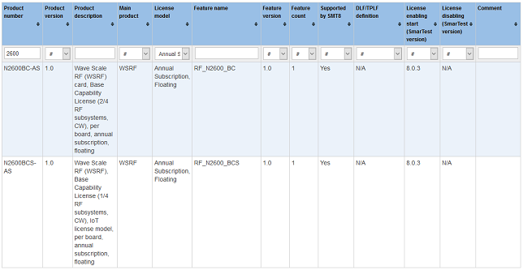

V93000 license products
The V93000 license products master lookup table details all available V93000 license products.
Introduction
Licenses for both hardware and software features as well as licenses available/enabled with support contracts are contained in the V93000 License Master Look-up Table.
The following details are included:
- License features, versions and feature counts per product.
- Available license models per product (30 day, 6 month, 1 year, annual subscription, perpetual, node-locked, floating, ...).
- Indicator highlighting whether license product is supported by SmarTest 8.
- License feature definition information required in model file or device license file (DLF, SmarTest versions 5, 6, and 7) and test program licensing file (TPLF, SmarTest 8).
- SmarTest version from which the feature was enabled with the associated license.Note N/A in the License enabling start column identifies licenses that are not part of SmarTest, for example, licenses for standalone software tools.
- SmarTest revision from which the feature or the license was disabled For example, a licensed
feature was included as standard functionality or included in the hardware base capability.
Note N/A in the License disabling column indicates that the license is still active. The license has not been obsoleted or the associated functionality has not become hardware or system base capability.
- Comments to help explain changes, such as license application, changes, obsolescence, ...).
Using the filters
The filter functionality of the master lookup table can be used to display subsets of the available licenses, making the data more manageable for viewing. Use the filtering options for a specific license data type to limit the information returned. Only data that matches the criteria is displayed in the list.
The filter types are applied as follows:
- Select an option from a dropdown list.
- Enter a string (case independent). All instances of the data type associated with the filter containing the string are displayed.
Multiple filters can be set in conjunction to further refine the data displayed.
Example
Filtering with strings and menu options
The following screenshot shows the results for all licenses containing the string 2600 in the product number and having a License model type: Annual Subscription, Floating.

Functional changes
- Introduced in SmarTest 8.1.4
- Introduced in SmarTest 7.5.1